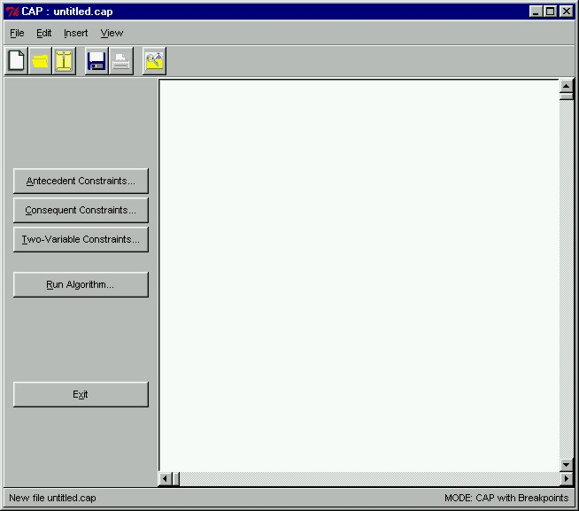

 |
The Main WindowAfter finished examining the contents of the database, we can proceed to create constraints on the data we want mined. Constrained frequent set mining is one of the key features of our prototype. Here, we see the prototype's main window. Through this window, we can create constraints on or between the antecedent and consequent by clicking on the corresponding button in the left frame.
|